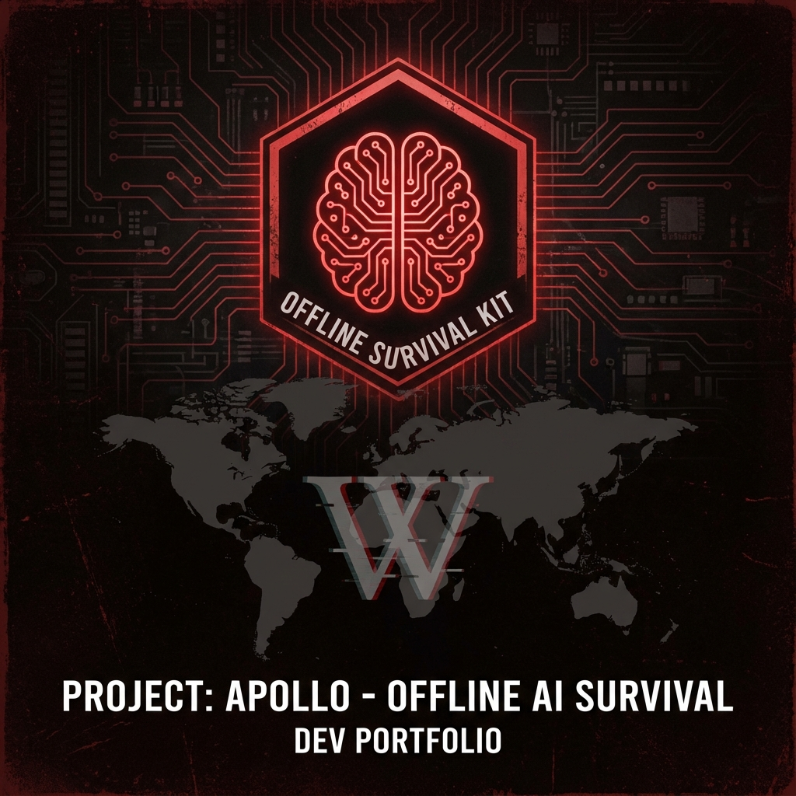

Survivor Project
Guía para instalar IA local, Wikipedia y mapas offline en caso de apocalipsis.
Apasionado por el desarrollo de software, la arquitectura de sistemas y el mundo Linux. Transformando ideas en código eficiente desde Debian + Hyprland.
Estudiante de Ingeniería Informática en la Universidad de Santiago de Compostela (USC). Graduación esperada en 2027.
Usuario apasionado de Debian con Hyprland como compositor. Creo firmemente en el software libre y la personalización total del entorno de trabajo.
Me apasiona crear soluciones eficientes, optimizar rendimiento y explorar la intersección entre hardware y software. Siempre aprendiendo, siempre mejorando.
Fuera del código disfruto del gimnasio, el pádel, el ajedrez y viajar para conocer nuevos lugares.
_,met$$$$$gg. adrianql@debian
,g$$$$$$$$$$$$$$$P. ---------------
,g$$P" """Y$$.". OS: Debian GNU/Linux (Hyprland)
,$$P' `$$$. Host: Inspiron 16 5630
',$$P ,ggs. `$$b: Kernel: 6.16.12+deb14+1-amd64
`d$$' ,$P"' . $$$ Shell: zsh 5.9
$$P d$' , $$P DE: Hyprland
$$: $$. - ,d$$' Terminal: kitty
$$; Y$b._ _,d$P' CPU: Intel i7-1360P (16) @ 5.0GHz
Y$$. `.`"Y$$$$P"' GPU: Intel Iris Xe Graphics
`$$b "-.__ Editor: Neovim / VS Code
`Y$$ Universidad: USC
`Y$$. Carrera: Ing. Informática
`$$b. Graduación: 2027
`Y$$b. Idiomas: ES, GL, EN (C1)
`"Y$b.
`"""
Principales áreas de conocimiento en las que desarrollo mi formación académica y proyectos:
Guía para instalar IA local, Wikipedia y mapas offline en caso de apocalipsis.
Guía completa para instalar Debian desde cero y configurar Hyprland.
Sistema de gestión para cines con reservas, sesiones y consultas SQL.
Videojuego de estrategia por turnos con diseño UML y patrones de software.
Chat grupal distribuido implementado con Java RMI.
Implementación completa del juego de mesa Monopoly con interfaz gráfica.
Juego de barcos con gráficos OpenGL y shaders en C++.
Sistema automatizado para sincronización de proyectos, gestión de licencias y conversión de bóvedas Obsidian a PDF.

Sistema de subastas distribuido implementado con agentes JADE.
¿Tienes un proyecto interesante o simplemente quieres charlar sobre tecnología? ¡Me encantaría saber de ti!